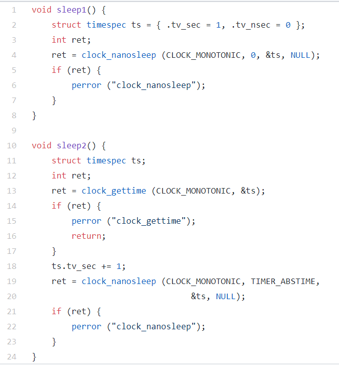
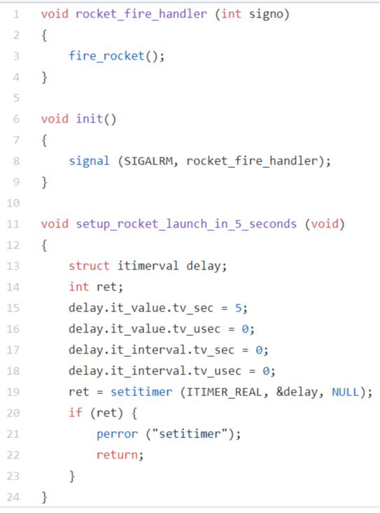

How does a Linux based system ensure wall time remains correct after being powered down for a long period of time? Select any answer(s) which apply.
Kernel timer intervals measured in ticks or jiffies are the same frequency on all hardware platforms.
Systems using 32 bit processors and time_t data structures will experience a clock rollover event resulting in possible time errors in the year 2038.
You are writing software which is using the POSIX clock functions to calculate time between two events. Which clock type should you use for timestamping the events?
You are writing software which is using POSIX clock functions to display the current system time in Mountain Standard Time. Which clock type should you use for getting the current time?
Your project is attempting to use clock_settime to set the time of day, however the time is not changing. What troubleshooting steps may help isolate the problem? Select any which apply.
Select all of the true statements about the code below (select any statements which apply). Consider all preemption durations referenced below to be significantly less than 1 second in length.

Select any concerns with the code example below (select any which apply). Assume the init() function was called at program initialization.

Execution time for a process is _____________________
Which of the following is an example of Absolute time